—— 深夜 02:17 · 办公室 ——
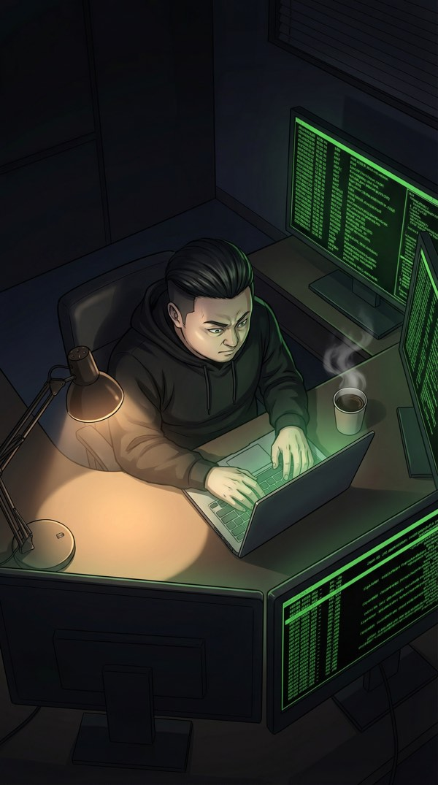
凌晨两点。整栋楼只剩我和"反谍面板"还醒着。
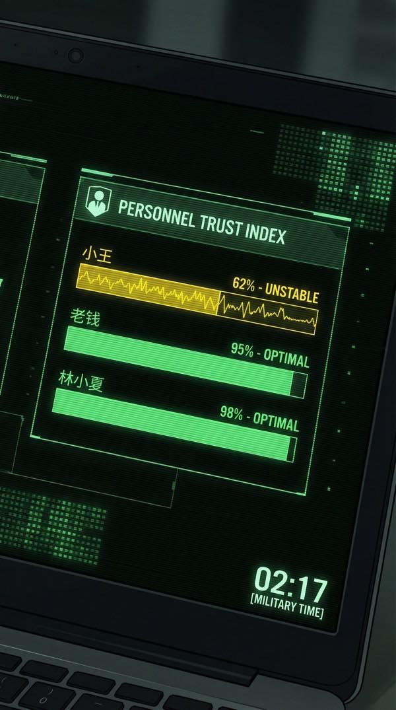
【反谍面板·实时监控】
小王 — 信任指数：62% ▲▼（不稳定）
老钱 — 信任指数：95% ████████████
林小夏 — 信任指数：98% █████████████
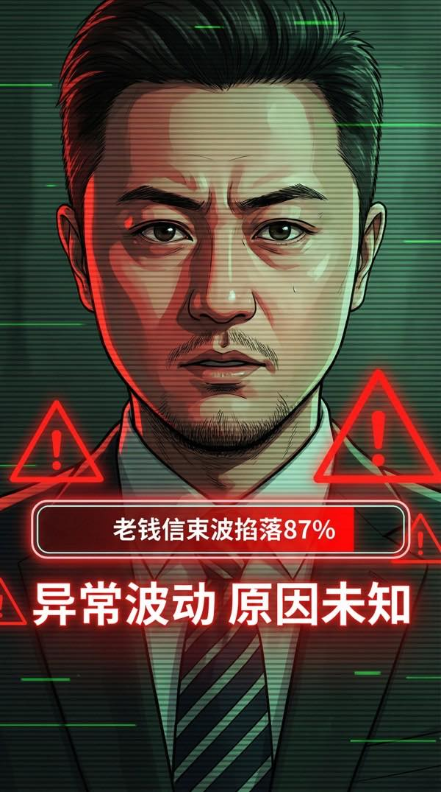
小王的62%我不意外——新人嘛，系统还在收集数据。
但让我脊背发凉的是另一件事：老钱的95%，在凌晨2:17，短暂跳到了87%。
持续了3秒就恢复。如果不是我正好盯着，根本不会注意到。
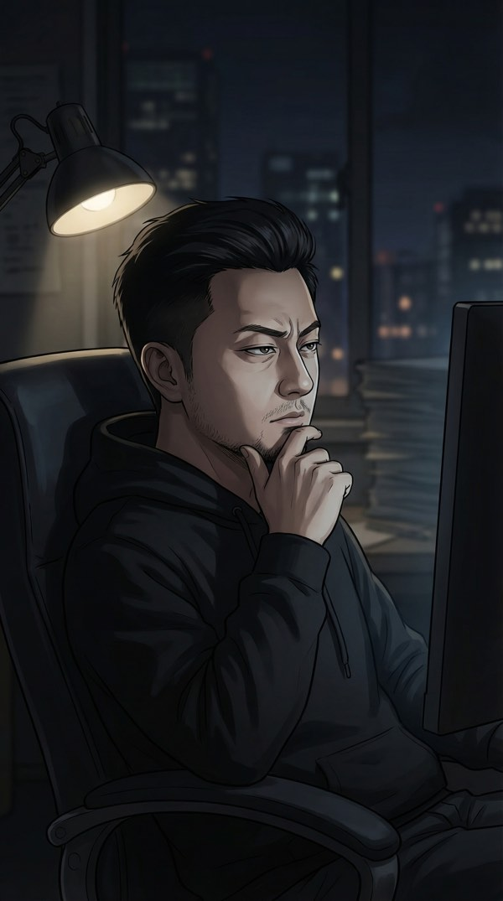
系统提示：异常波动，原因未知。
我盯着那个"未知"两个字。在"暗刃"的日子教会我——异常只有两种：已解释的，和还没解释的。
没有"巧合"这个选项。
—— 林小夏深夜送咖啡 ——
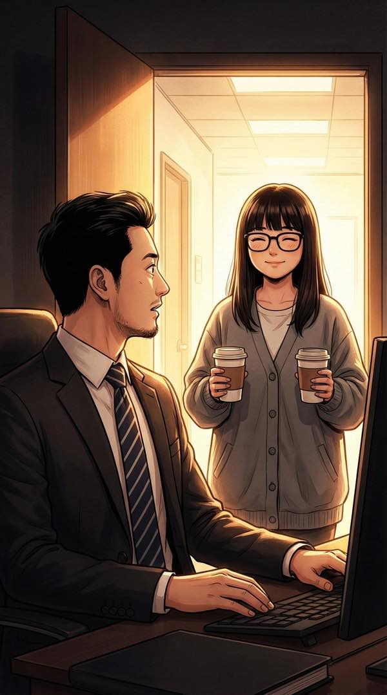
门吱嘎一声开了。林小夏端着两杯咖啡走进来，睡眼惺忪但嘴角带笑。
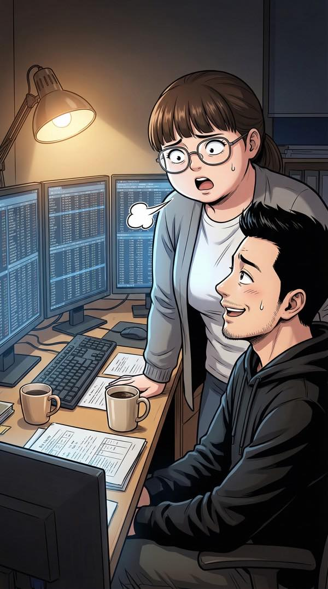
"一杯给你，一杯给你那个'反谍系统'。它比你还能熬夜。"
她凑近屏幕看了一眼密密麻麻的数据，叹了口气：
"朱总，正常CEO半夜看的是财报，你看的是'敌情通报'。"
"……不是每个CEO都在特种部队待过。"
"也不是每个特种兵都能把通宵加班说得这么理直气壮。"
—— 次日 · 钓鱼行动 ——
⚔️ DECISION-4：调查策略
A. 技术钓鱼 — 给每个嫌疑人透露不同版本的假情报，看哪个版本泄漏
B. 直接对质 — 单独约谈小王，用特战审讯技巧读微表情
C. 暗中监控 — 调取所有人的内网访问日志和通信记录
✅ 我选了A。黑客基因+战术思维的完美融合。而且——"菩萨心肠"告诉我，直接对质可能伤害无辜的人。
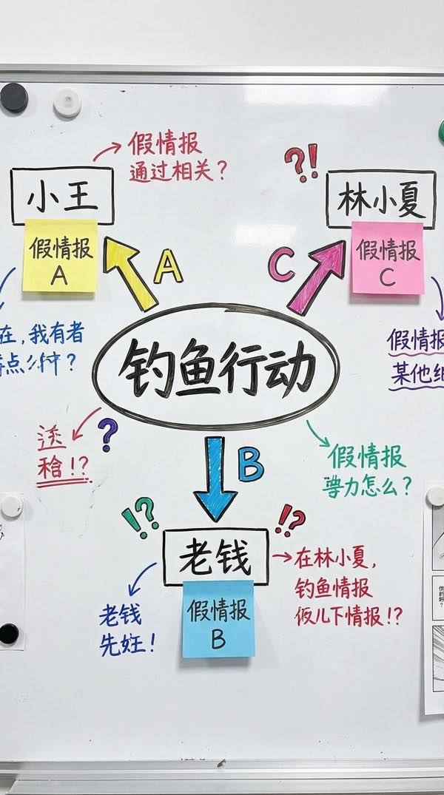
白板上，我画了一张精密的钓鱼流程图。三条支线，三个诱饵，三种结局。
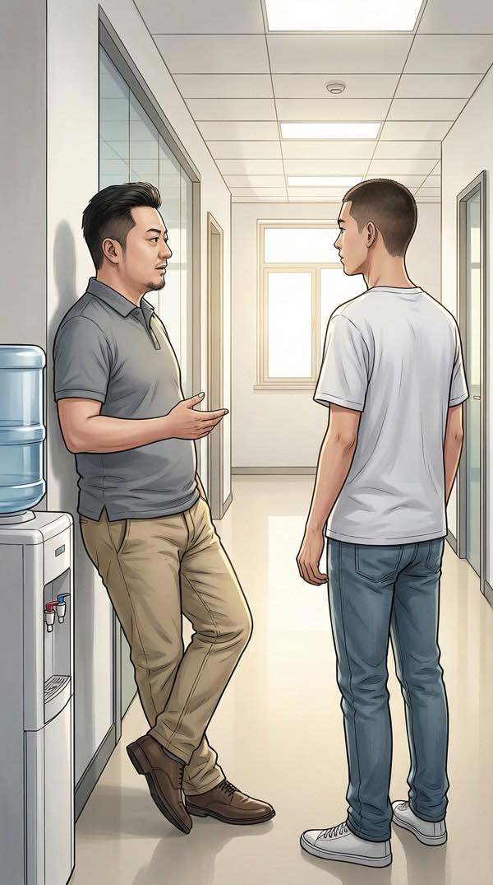
诱饵一·小王：
"小王啊，跟你透个底——A轮我们可能不做了，准备直接接触战略投资人。你帮我研究一下方向。"
小王拿着水杯连连点头，表情认真得像在听任务简报。
信任指数：62%。不动。
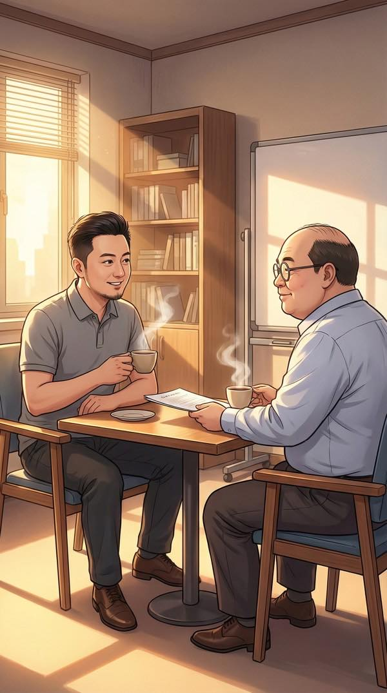
诱饵二·老钱：
"老钱，咱兄弟私下说——我跟赵天成初步接触了一下，技术合作这块可能有戏。你觉得呢？"
老钱擦了擦眼镜，"靠谱吗？赵天成这人……"
"先保密，等我谈完再说。"
信任指数：95%。稳得一批。
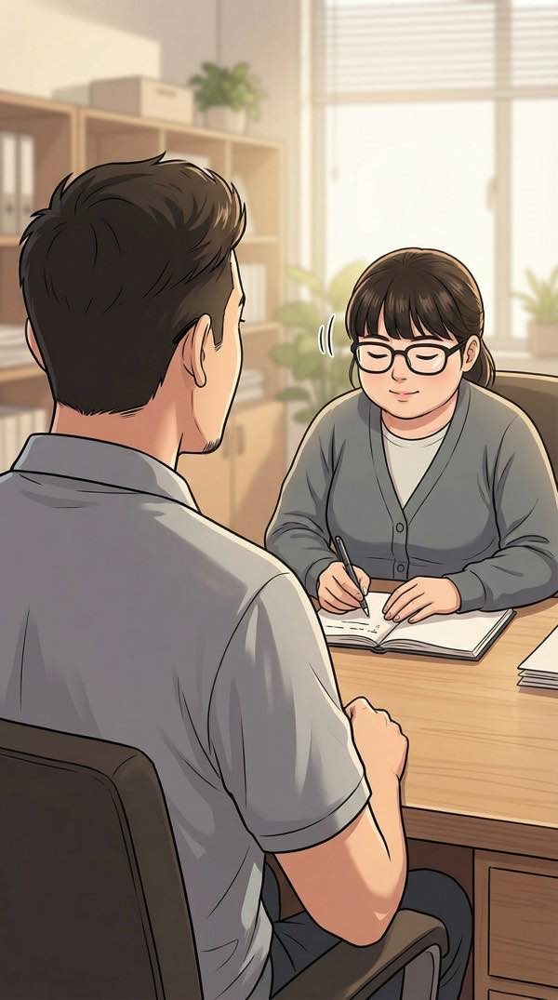
诱饵三·林小夏：
"小夏，下周一我要飞北京，见一个军方背景的天使投资人。帮我准备一份pitch deck。"
她推了推眼镜："军方？你这是要把创业搞成谍战片？"
"……你不觉得已经是了吗？"
信任指数：98%。纹丝不动。
—— 48小时后 ——
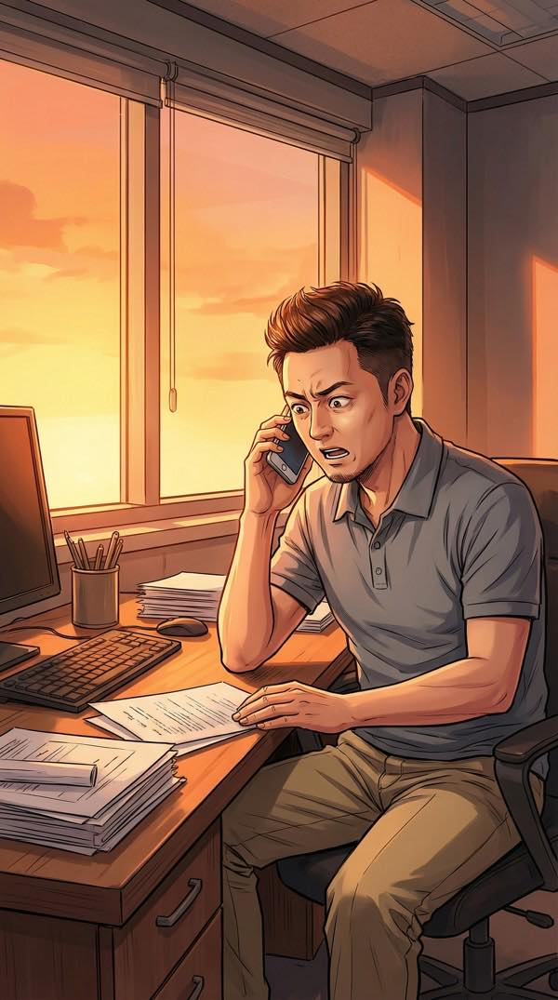
两天后，电话响了。
一个朋友告诉我——赵天成在某个行业饭局上，不经意地提起了一句话：
"听说朱江的团队在考虑跟我们做技术合作？"
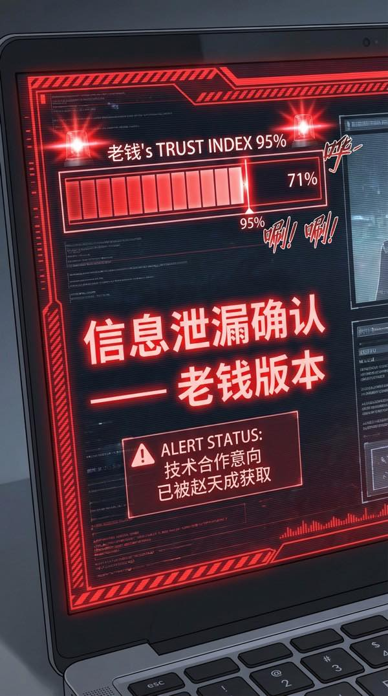
【战术分析·泄漏确认】
泄漏版本：老钱版本
泄漏内容：技术合作意向
泄漏渠道：赵天成·行业饭局
⚠️ 警报：老钱信任指数 95% → 71% 🔻
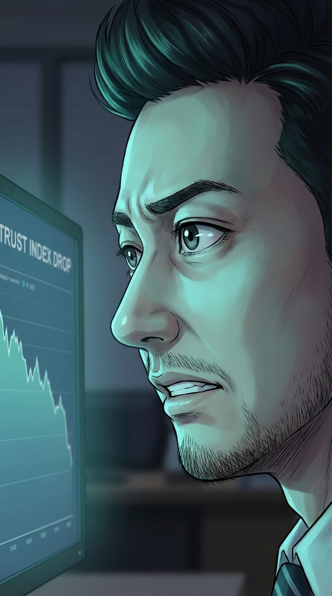
我盯着那个从95%暴跌到71%的数字，感觉像被人在胸口捅了一刀。
老钱。上下铺四年的兄弟。一起吃了多少碗泡面。一起创业第一天挤在民房里。
十二年交情。就这？
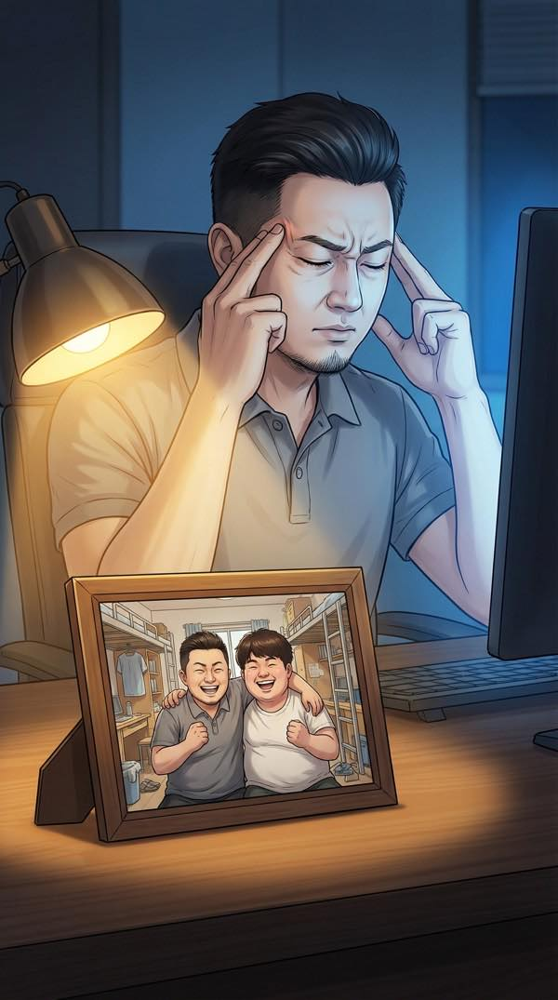
桌上那张合照——大学宿舍门前，两个傻小子举着火锅底料比剪刀手。
我拿起来看了很久。
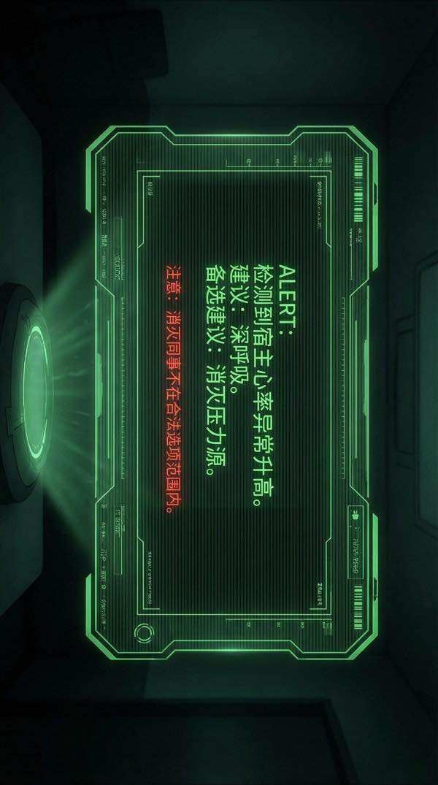
系统弹出一条提示：
"检测到宿主心率异常升高。建议：深呼吸。"
"备选建议：消灭压力源。"
"⚠️ 注意：消灭同事不在合法选项范围内。"
……谢谢你啊系统，但你的幽默感真的需要升级。
⚔️ DECISION-5：老战友是内鬼？
A. 相信数据 — 铁证在此，立刻隔离老钱的权限
B. 相信直觉 — 十二年兄弟不可能背叛，一定有其他解释
C. 设局试探 — 再给老钱一个"致命假情报"，看他是否再次泄漏
✅ 我的心说B，但我的脑子说C。
十二年的兄弟不能因为一次数据就判死刑，但也不能因为感情就放弃验证。
再来一次。给他最后一次机会证明自己。
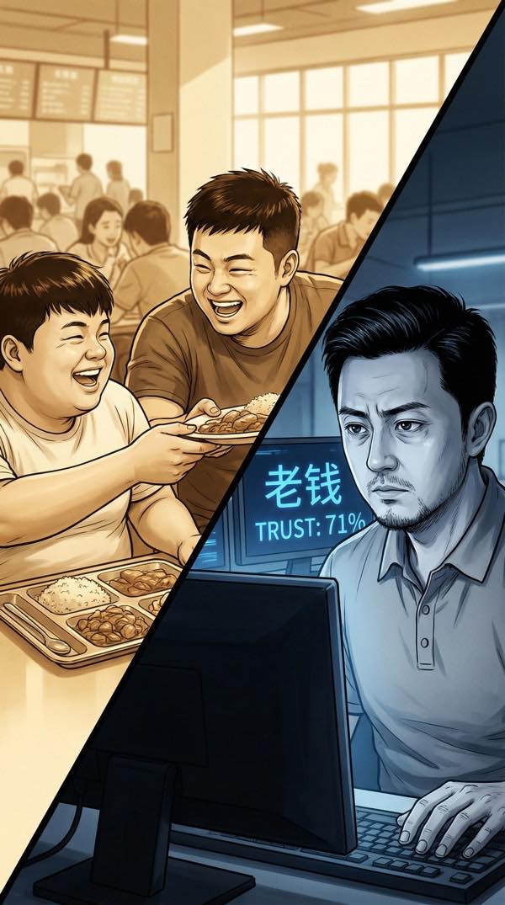
大学食堂里的老钱，总把红烧排骨夹给我——"你训练量大，多吃点肉。"
创业第一天的老钱，自掏腰包买了一箱红牛——"搞大事之前，先把命续上。"
今天的老钱……信任指数71%。
我不相信他会背叛。但我必须确认。
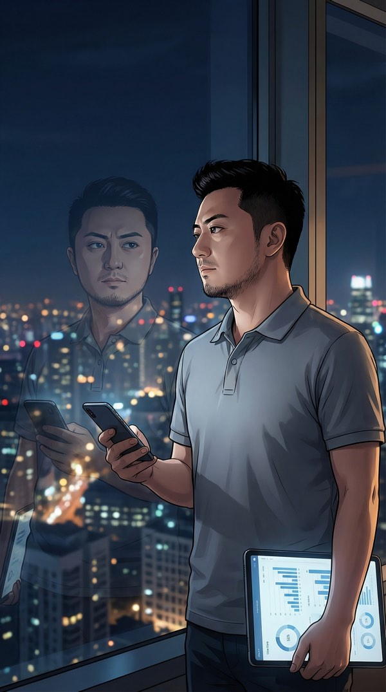
我站在窗前，看着深圳的夜景。满城灯火，每一盏灯后面都是一个故事。
但我现在只关心一个：老钱的故事。
手机和数据板，一手一个。主动出击，不等答案找上门。
—— 当晚 22:00 · 跟踪行动 ——
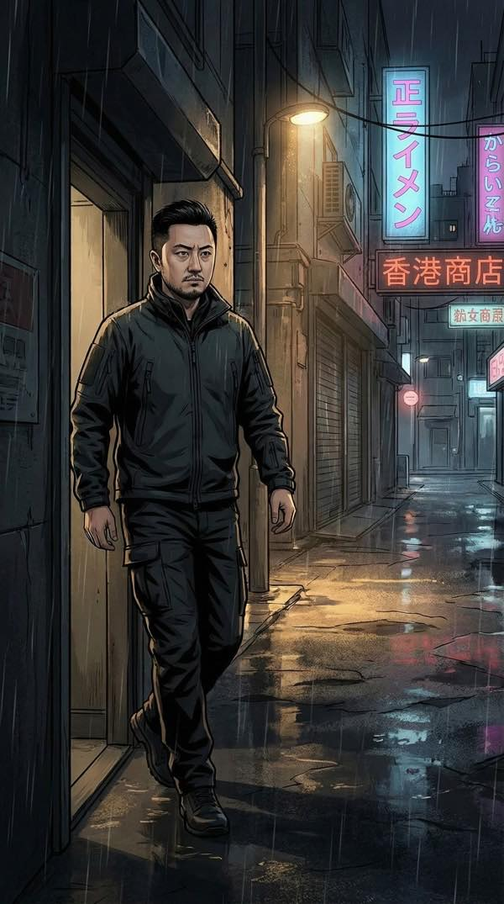
换上深色夹克。拉上拉链。出门。
特种兵的身体记忆自动激活——呼吸放缓，步伐无声，视野扩大到270度。
跟踪一个人和潜入敌营相比，难度差了十个档次。但目标是兄弟这件事……比任何任务都让人难受。
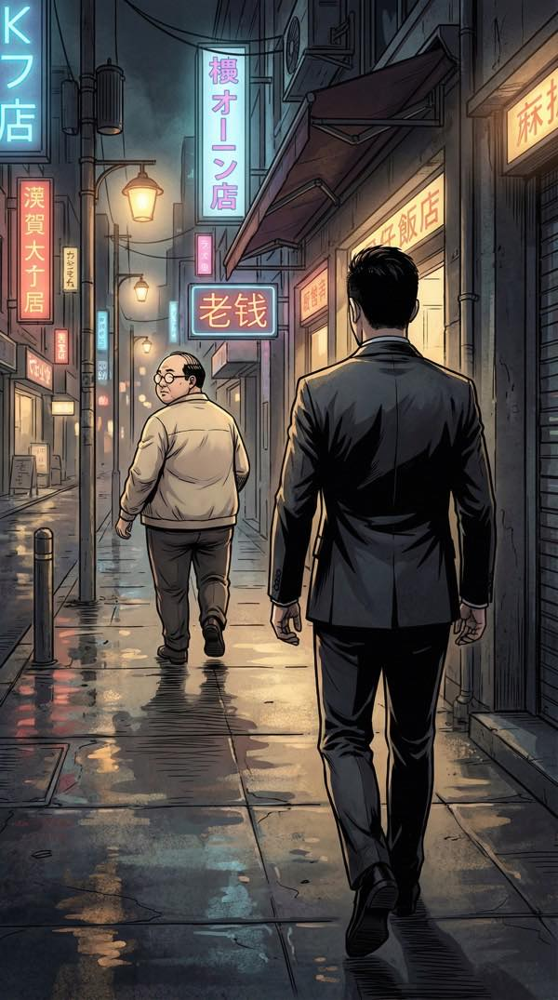
老钱没有回家。
他走过两条街，拐进了一条灯光暧昧的巷子。最后在一家看起来挺高档的酒吧门前停下。
推门进去了。
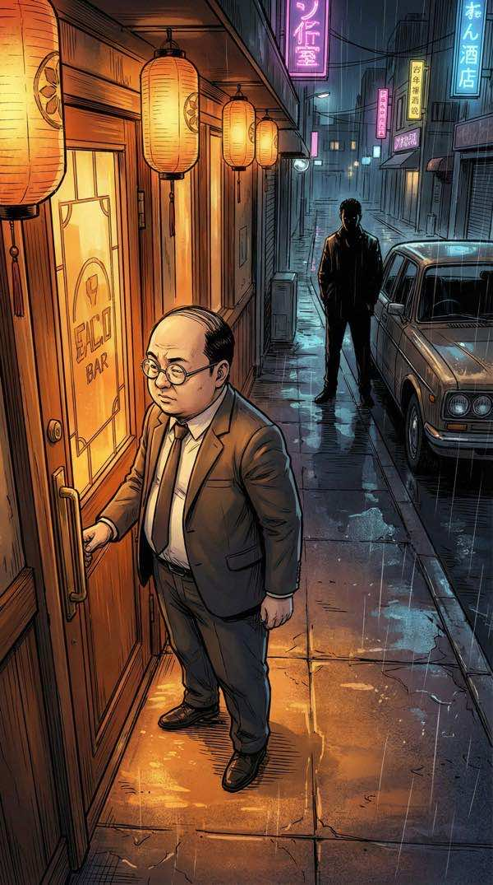
我跟到街对面，借着路边停靠的车做掩护。酒吧门口挂着两个暖黄色的灯笼，透过磨砂玻璃能看到里面的轮廓。
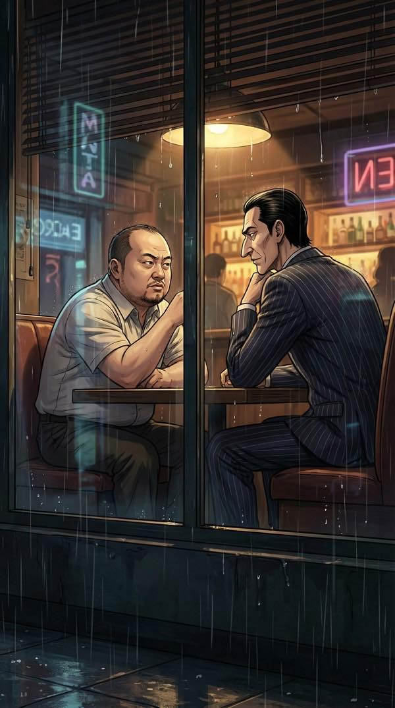
透过窗户，我看到了卡座里的两个人——
老钱。和赵天成。
面对面坐着。在说什么。赵天成身体前倾，指尖点着桌面。老钱缩在沙发角里，像……
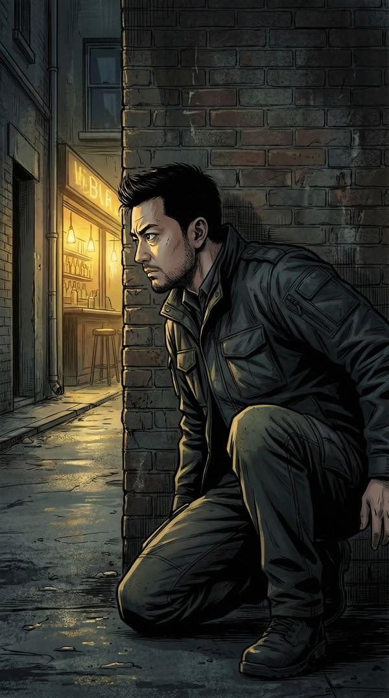
我单膝跪地，靠在巷子拐角的墙上。标准侦察姿势。呼吸控制在每分钟8次以下。
眼睛锁定窗口。心里在快速分析：老钱和赵天成见面。这是密谋？还是……
不对。老钱的肢体语言不像在合作——他像在……畏缩。
—— 暗巷伏击 ——
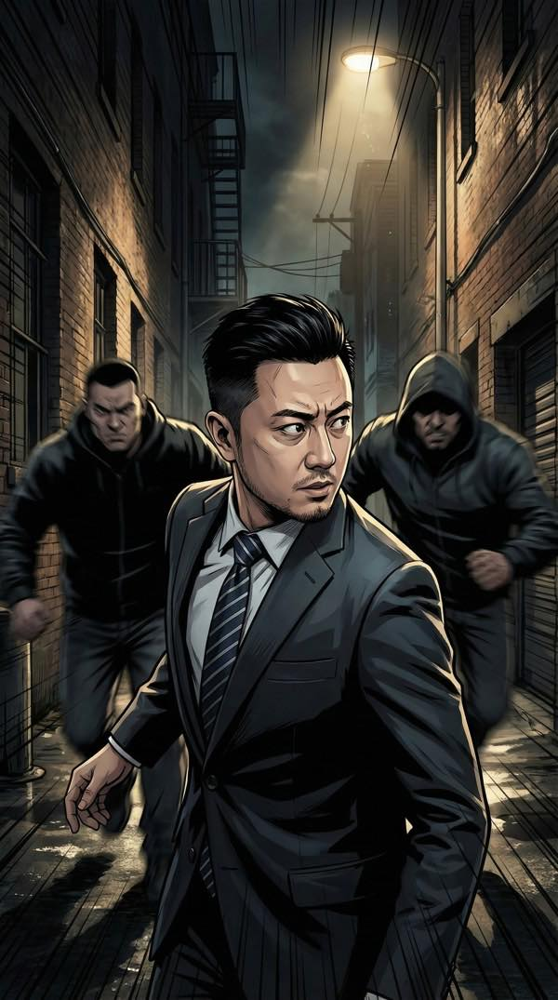
就在这时——身后有动静。
两道黑影，从巷子深处冲出来。速度很快。训练有素。
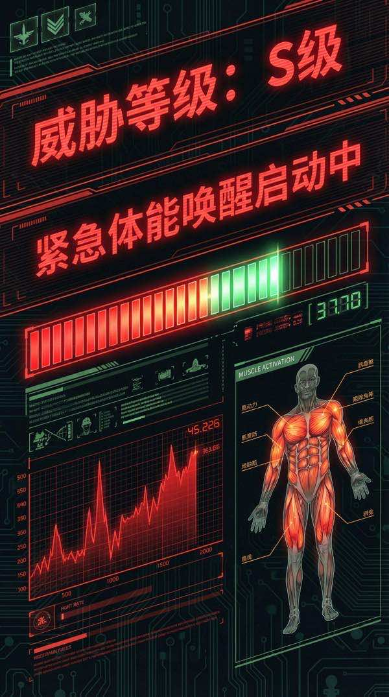
【威胁等级：S级】
紧急体能唤醒启动
肌肉记忆激活中……
CQB近身格斗模块加载
████████████████ 100%
⚠️ 冷却期：90秒
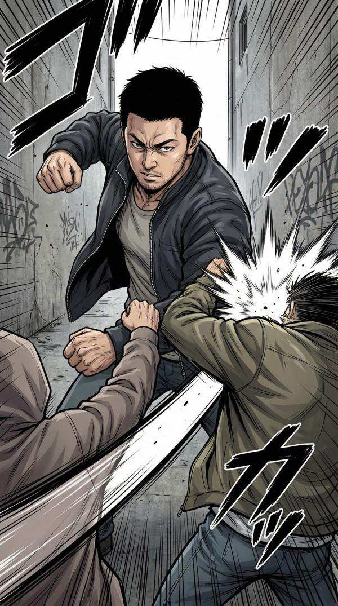
身体比大脑快了半秒。
左手格挡第一个人的右勾拳——力道不小，职业级别。右肘同时砸向第二个人的太阳穴。
这不是街头斗殴。这是经过训练的袭击。
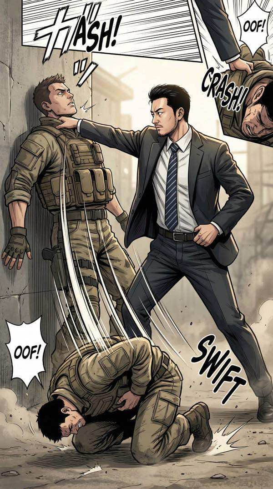
三十秒。
一个被我用前臂锁在墙上，另一个抱着肚子在地上蜷成虾米。
CQB的标准教学用时是45秒制服双人目标。我提前了15秒。
退役五年，手没生。
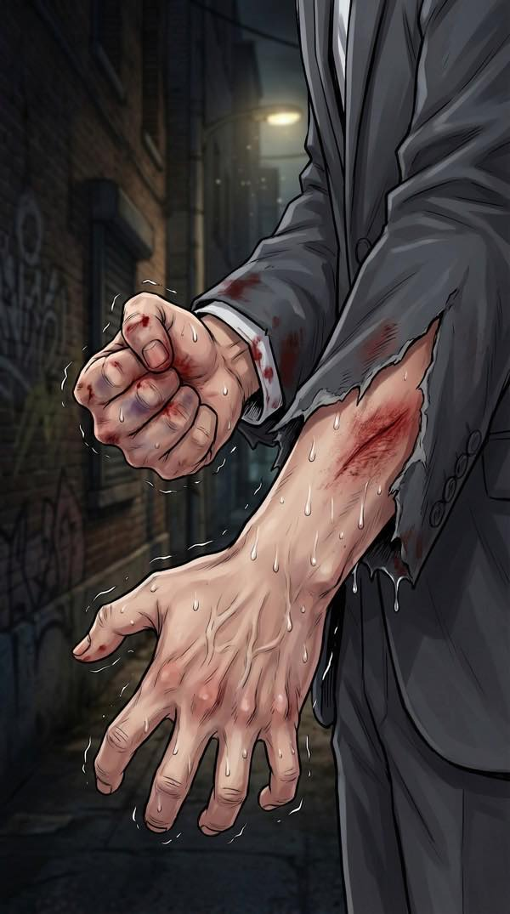
然后冷却期到了。
双腿开始发软。手指止不住地颤抖。肌肉像被抽干了力气，浑身上下在抗议。
夹克拉链被扯断了，右前臂蹭破了一层皮，血珠子混着汗往下淌。
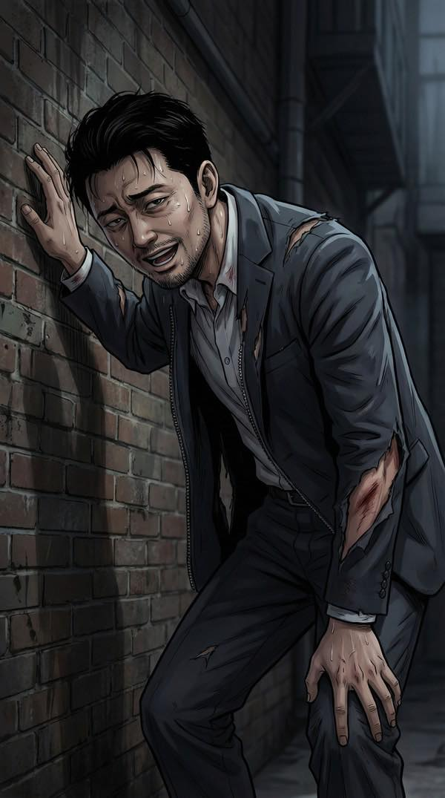
我靠在墙上，大口喘气。双腿打着摆子，但嘴角不由自主地翘了起来。
退役五年。坐办公室五年。敲代码五年。
身体还记得怎么打架。就是……代价比以前大了一点。
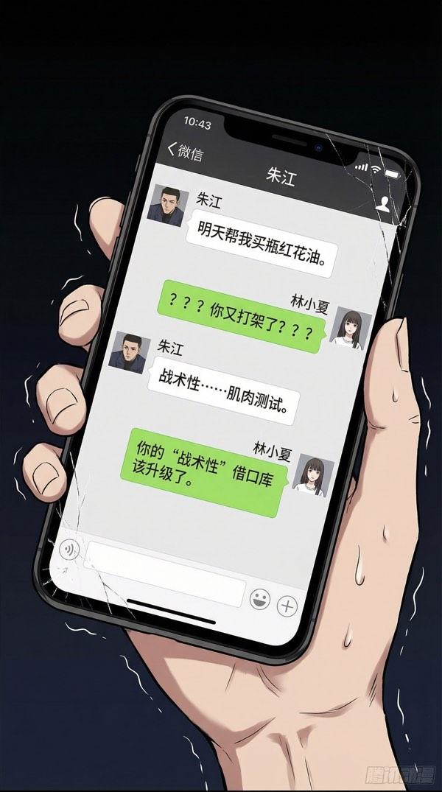
我哆嗦着掏出手机，给林小夏发了条消息：
"明天帮我买瓶红花油。"
"？？？你又打架了？？？"
"战术性……肌肉测试。"
"你的'战术性'借口库该升级了。"
……她说得对。
—— 真相 ——
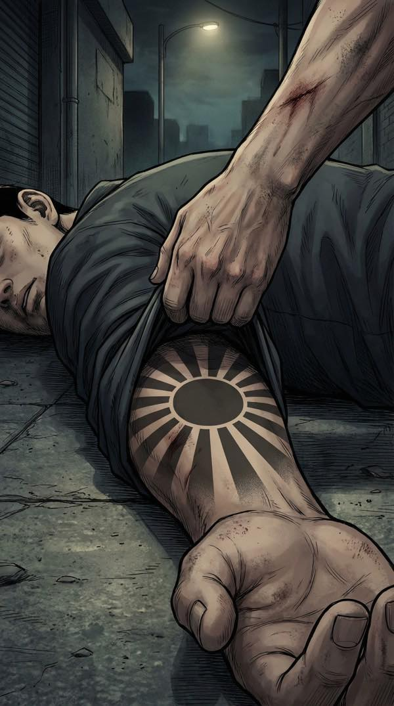
我蹲下来检查被打倒的两个人。翻开其中一个的袖子——
手臂内侧，一个纹身。暗色的几何图案，像是一个日蚀的符号。
我的血，第二次在今晚变冷。
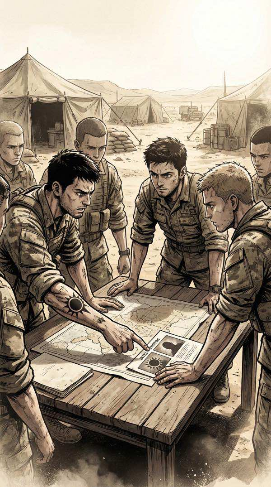
记忆回溯——
沙漠。"暗刃"的情报室。我们围着桌子看照片，小队长指着一个符号说：
"这是'影子'组织的标记。他们渗透了三个军区的后勤线。任务目标：斩首行动。"
那次任务之后，上面说"影子"已经覆灭。
看来——上面说的不一定对。
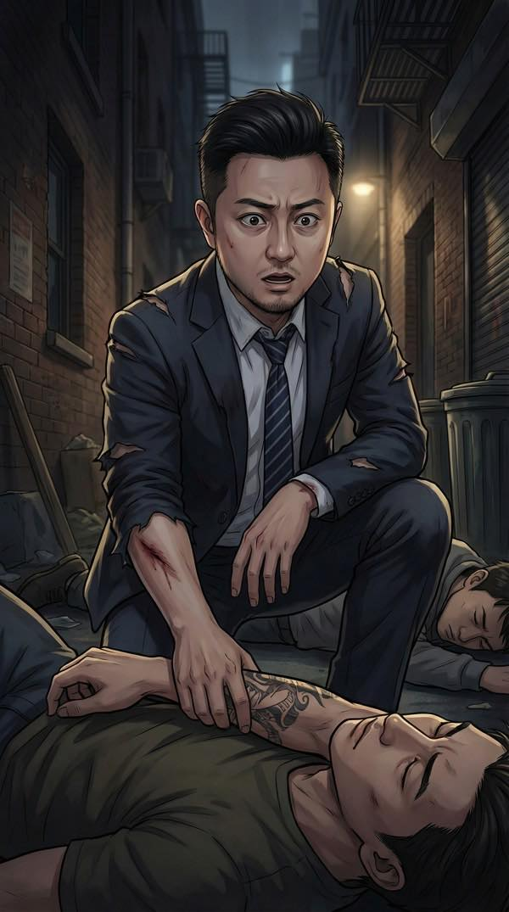
不是赵天成的人。
是"影子"。一个我以为已经不存在的地下势力。
他们为什么会出现在这里？为什么要袭击我？
更重要的是——他们和老钱有什么关系？
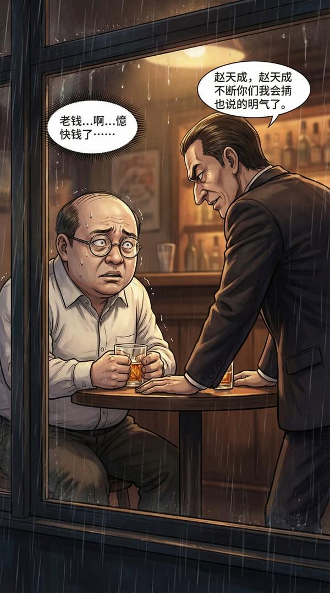
我抬头看向酒吧的窗户。
这一次，我看清了老钱的表情。
不是密谋。不是背叛。
是恐惧。纯粹的、刻到骨子里的恐惧。眼神闪躲，肩膀缩成一团，双手死死攥着酒杯——那是一个被逼到绝路的人的姿势。
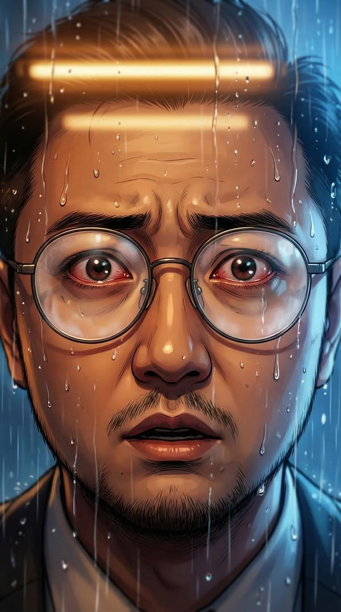
而坐在对面的赵天成，身体前倾，手指敲着桌面，嘴角挂着笑。
那不是谈合作的姿态。
那是猎人逼着猎物就范的姿态。
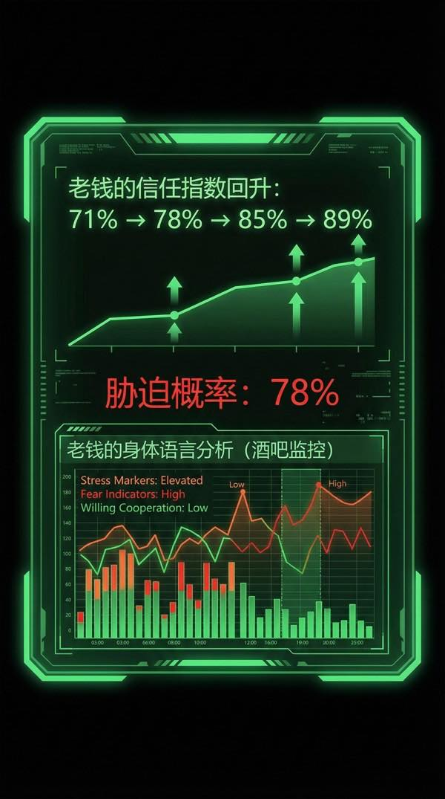
【战术面板·数据更新】
老钱 信任指数：71% → 89% ▲▲▲
新增分析：
┣ 胁迫概率：78% ██████████
┣ 主动出卖概率：12%
┗ 身体语言：恐惧指标超标
评估：老钱极大概率正在被胁迫。
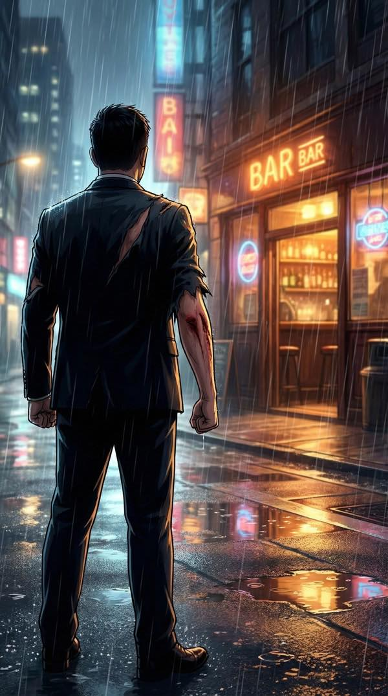
我站在雨后的街上，看着对面亮着暖光的酒吧。
拳头攥紧了。不是因为愤怒。
是因为——
我差一点就冤枉了自己的兄弟。
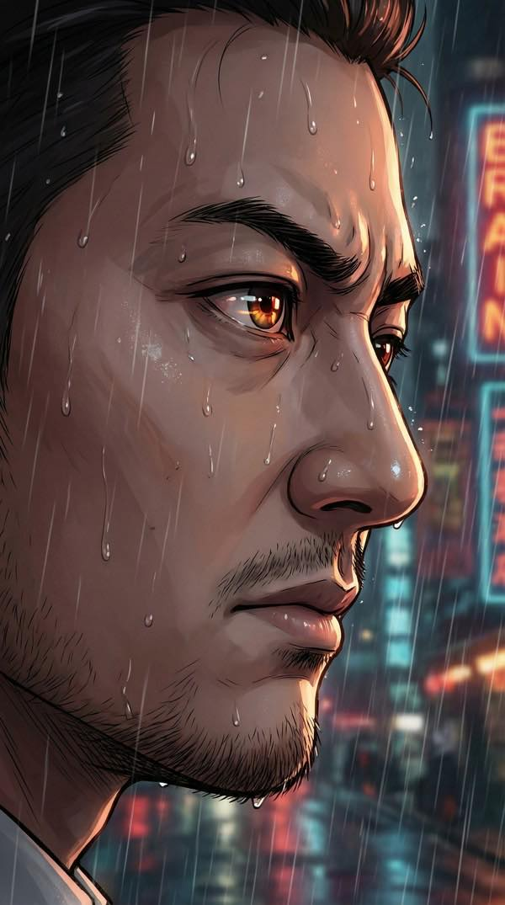
老钱，你到底摊上了什么事？
不管是什么——
你当年给我夹排骨的兄弟，我不会丢下。
"影子"也好，赵天成也好。
谁动我的人，我动他的命。